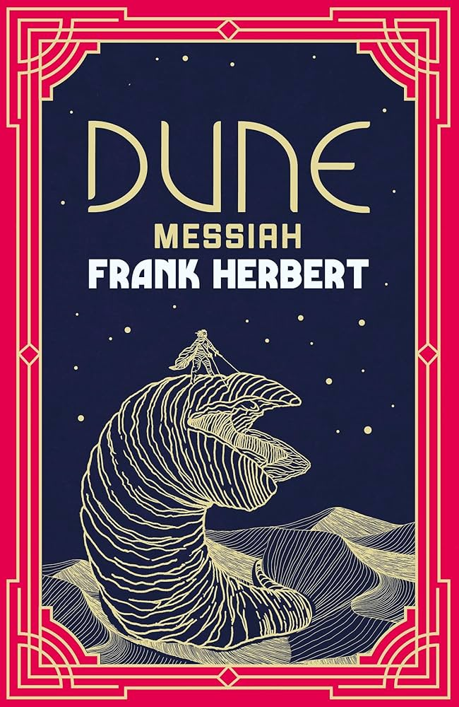

About Me

Hi! I'm David Hamoui, a high school student from Brazil with a big goal—to make a difference in the world. You can usually find me coding, volunteering, diving into philosophy books, spinning ideas into action with my social impact projects, or chatting. I've spent the past few years working on initiatives from building AI games to collecting school supplies for students in need, all while balancing studies, Shabbat dinners, and endless curiosity about the universe.
More About the Books I've read and the songs I'm listening to...
Listen to my (currently) favorite track, Afeto by Mayra Andrade (Ankhoï Remix):
This Afro House remix of Mayra's "Afeto" is a mix of African beats and Portuguese, perfect for studying or dancing.
* This version is cropped and I do not own this song.
Books I'm Reading
- Meditations
- On the Shortness of Life
-  Dune Messiah
(Some of) The Books I've Read
- Harry Potter series
- Siddhartha
- Ender's Game
- Man's Search for Meaning
- I Am Number Four series
- Astrophysics for People in a Hurry
- Letter to Menoeceus
- SPQR
- Endurance
- The Martian
- Artemis
- Project Hail Mary
- Dune